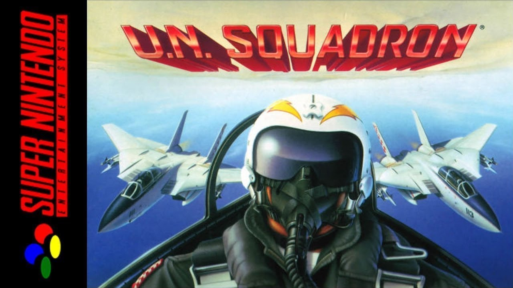

U.N. Squadron Tribute
My Role
In the development of the U.N. Squadron Tribute game we were a small group, so I worked on different areas of the project but the most remarkable roles were gameplay and UI programmer.
About the Project
The U.N. Squadron Tribute was a university project made by 4 students in our first year at university and this was my first big videogame project so far. The game was entirely programmed in C++ using SDL2 from scratch, only with support to load images and audio.
It was a very fulfilling experience where we all learned a lot. You can find more information on our Web and Wiki.
As the game was a tribute, the design and art were easy to implement, although the art of the game needed to be adapted for our application.

About the Game
U.N. Squadron is an arcade shoot’em up single-player game (horizontal scrolling shooter game). It was Initially developed for the Capcom arcade, but two years later, in 1991, it was launched for the SNES (the version we worked on). This game was known in Japan as Area 88 since the game was based on the manga Area 88 created by Karou Shintani.
My Contributions

Power-Ups
U.N. Squadron power-ups are collectable items that can appear when you defeat an enemy, they will move once spawned and disappear towards the left side of the screen. I programmed its behavior and how the stats of the player are boosted.
HUD & Menus
I worked on how the HUD of the gameplay reacts to updates in score, power-ups boosts, health points, etc.
Regarding the menus, I implemented the start screen and the level selector in all aspects: visual, audio and programming. I also contributed to the transitions between screens and how the timings were managed.


Controller Integration & Debugging
As a requirement, the game needed the implementation of a system that allows the program to detect when a controller is connected and how its input is managed. I added a debugging view to check the controller is being read correctly.
Furthermore, I programmed the debugging functionalities of the game that allows you to visualize data about the loaded resources in the scene like textures, audio FX, fonts, colliders, active particles, etc.